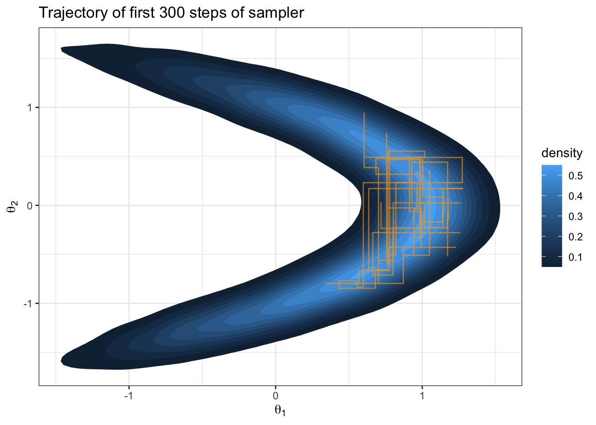
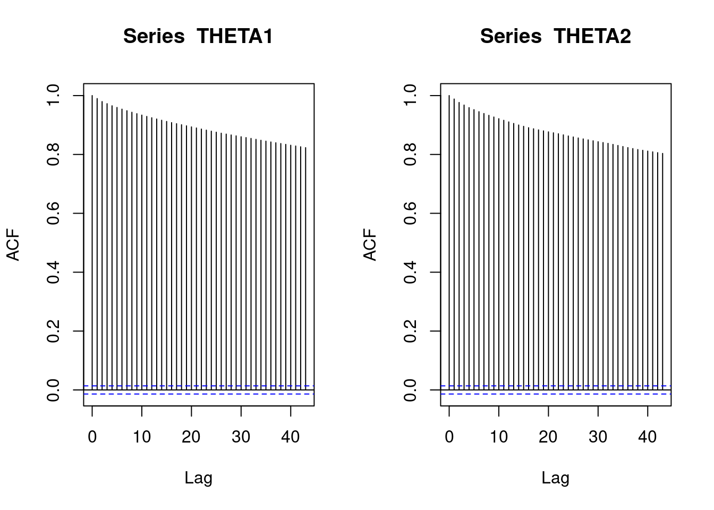
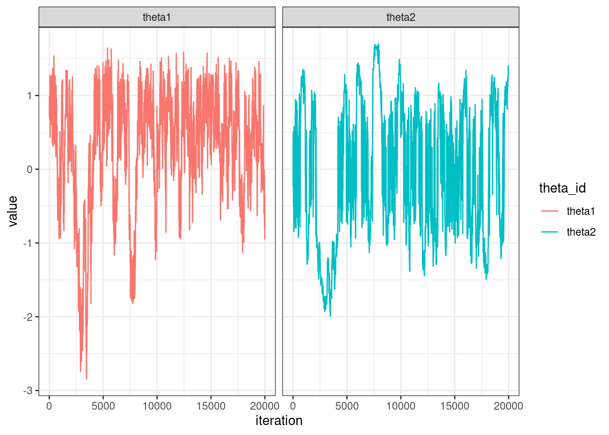
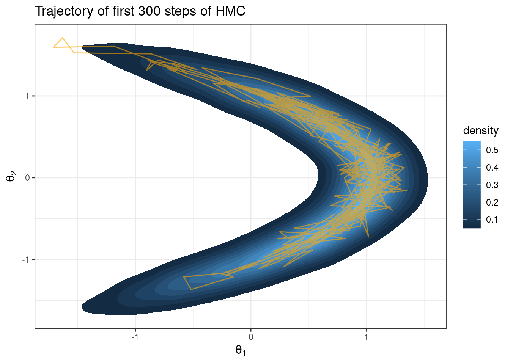
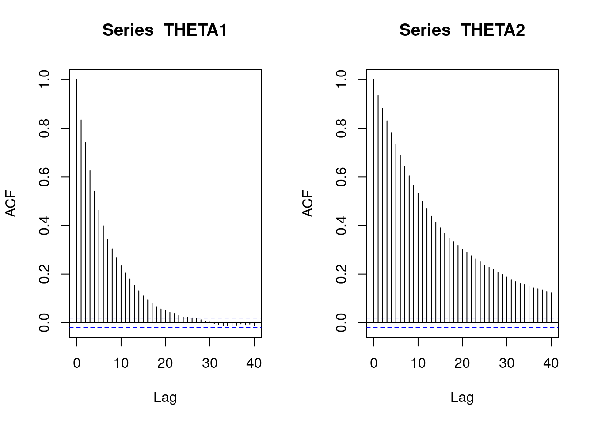
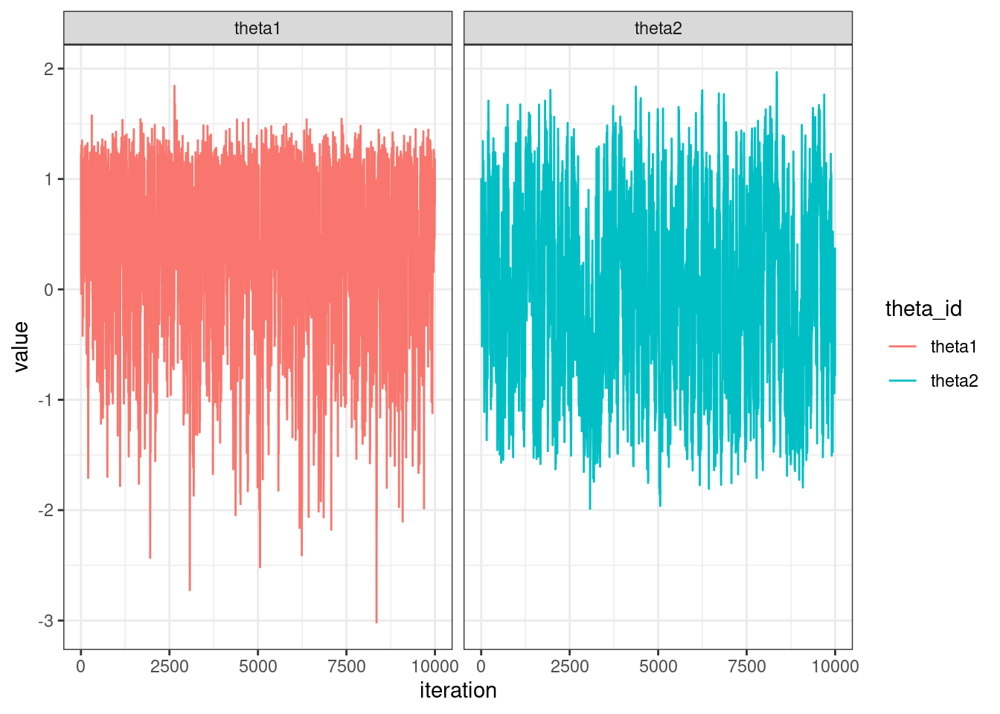

See libraries used in these notes
library(tidyverse)
library(latex2exp)
library(mvtnorm)
library(coda)library(tidyverse)
library(latex2exp)
library(mvtnorm)
library(coda)Hamiltonian Monte Carlo (HMC) is a proposal mechanism \(J(\theta | \theta^{(s)})\), that uses Hamiltonian dynamics to generate proposals that are far away from the current state of the chain with high acceptance probability. These proposals are subsequently accepted or rejected according to the Metropolis-Hastings acceptance ratio.
posterior:
\[ p(\theta | y_1, \ldots y_n) \propto \underbrace{\prod_{i=1}^n \text{dnorm}(y_i; \theta_1 + \theta_2^2, 1)}_{\text{likelihood}} \cdot \underbrace{\text{dnorm}(\theta_1; 0, 1) \text{dnorm}(\theta_2; 0, 1)}_{\text{priors}} \]
logPosterior = function(theta) {
c = theta[1] + (theta[2] ^ 2)
logLikelihood = sum(dnorm(y, mean = c, sd = 1, log = TRUE))
logPrior = dnorm(theta[1], 0, 1, log = TRUE) +
dnorm(theta[2], 0, 1, log = TRUE)
return(logLikelihood + logPrior)
}# simulated data y
set.seed(360)
n = 30
theta1 = .75
theta2 = .5
y = rnorm(n, (theta1 + (theta2^2)), 1)
y [1] 2.4374945977 1.3225732383 0.7957033706 0.0009050433 0.9624998552
[6] 0.2485689217 0.3494050797 0.8481528753 0.1619672883 1.5373043843
[11] 1.9319327323 2.1723549678 0.5916180759 1.5788760946 -0.2521989302
[16] -0.0956751145 2.1896602700 2.7428271328 -0.8507334992 -0.3434228915
[21] 0.7158629051 2.9076884521 -0.0258688807 2.7880781640 1.3319085255
[26] 1.0734242350 1.3910936322 1.8806039555 1.6171004720 1.4077704842
Question: What about this target distribution could challenge a Metropolis sampler with \(J(\theta_i | \theta_i^{(s)}) = \text{normal}(\theta_i, \delta)\)?
Let’s try it out.
# sample from posterior
set.seed(360)
theta1 = 0 # starting point
theta2 = 0
THETA1 = NULL # empty object to save iterations in
THETA2 = NULL
S = 10000 # number of iterations
delta = .5 # proposal variance
accept1 = 0 # keep track of acceptance rate
accept2 = 0
for (s in 1:S) {
# log everything for numerical stability #
### generate proposal 1 and compute ratio r ###
theta1star = rnorm(1, mean = theta1, sd = delta)
log.r = logPosterior(c(theta1star, theta2)) -
logPosterior(c(theta1, theta2))
### accept or reject proposal and add to chain ###
if(log(runif(1)) < log.r) {
theta1 = theta1star
accept1 = accept1 + 1
}
THETA1 = c(THETA1, theta1)
THETA2 = c(THETA2, theta2)
### generate proposal 2 and compute ratio r ###
theta2star = rnorm(1, mean = theta2, sd = delta)
log.r = logPosterior(c(theta1, theta2star)) -
logPosterior(c(theta1, theta2))
### accept or reject proposal and add to chain ###
if(log(runif(1)) < log.r) {
theta2 = theta2star
accept2 = accept2 + 1
}
THETA1 = c(THETA1, theta1)
THETA2 = c(THETA2, theta2)
}
effectiveSize(THETA1) var1
38.28904 effectiveSize(THETA2) var1
40.44706 par(mfrow=c(1,2))
acf(THETA1)
acf(THETA2)
N = length(THETA1)
df = data.frame(theta = c(THETA1, THETA2),
theta_id = c(rep("theta1", N), rep("theta2", N)),
step = rep(1:N, 2))
df %>%
ggplot(aes(x = step, y = theta, col = theta_id)) +
geom_line() +
theme_bw() +
facet_wrap(~ theta_id) +
labs(x = "iteration", y = "value")
If we view the state of the Markov chain as the physical location of a particle in parameter space, then what happens if we pretend the laws of physics apply to this physical space? More specifically, let’s suppose the steps of the Markov chain are akin to a particle moving through Euclidean space and obeying Hamiltonian dynamics. The Hamiltonian of a system specifies its total energy.
To be a Hamiltonian system, the particle will have:
Question: we are going to match up the negative log-posterior to either the kinetic energy or the potential energy. Which one do you think makes more sense? Why does the negative sign make sense when we think of what we are trying to do in the context of this as a physical system?
Mathematically, let \(q\) be the position of the particle (in parameter space) and let \(p\) be the momentum of the particle. So \(q\) and \(p\) are both vectors of the same dimension (the dimension of parameter space). Then the Hamiltonian, \(H = U(q) + K(p)\) where \(U(q)\) and \(K(p)\) are the potential and kinetic energy respectively. We will let \(U(q) = - \log \pi(q)\) where \(\pi(q)\) is our target distribution.
Hamilton’s equations of motion state
\[ \begin{aligned} \frac{dq_i}{dt} &= \frac{\partial{H}}{\partial p_i}\\ \frac{dp_i}{dt} &= -\frac{\partial{H}}{\partial q_i}\\ \end{aligned} \] These equations govern the motion of the particle. They let us map from the state at time \(t\) to the state of the system at any future state \(t + s\). And it can be shown that \(\frac{d}{dt} H = 0\). In words, energy is conserved.
The above equations elicit a need to compute \(-\frac{\partial H}{\partial q_i} = \frac{\partial}{\partial q_i} \log \pi(q)\), i.e. the gradient of the log-posterior.
A simple choice of kinetic energy is:
\[ K(p) = \frac{1}{2} p^T M^{-1}p \]
where \(M\) is called the “mass matrix”.
Question: this looks like the log of a kernel you know… which one?
Fundamentally, HMC is just the Metropolis algorithm with proposals generated via Hamiltonian dynamics. The equations of motion above describe a vector field, and if we integrate them numerically, we can follow the flow through joint space of parameters and momentum.
Let’s tackle the banana target from before in an example.
We need the gradient of the log-posterior
\[ \begin{aligned} \frac{\partial}{\partial\theta_1} \log \pi(\theta_1, \theta_2 | y_1,\ldots y_n) &= \frac{\partial}{\partial\theta_1} \log\prod_{i=1}^n \text{dnorm}(y_i; \theta_1 + \theta_2^2, 1) \cdot \text{dnorm}(\theta_1; 0, 1) \text{dnorm}(\theta_2; 0, 1)\\ &= n \bar{y} - n \theta_1 - n\theta_2^2 - \theta_1\\ &= n\bar{y} - n\theta_2^2 - \theta_1(n + 1) \end{aligned} \]
\[ \begin{aligned} \frac{\partial}{\partial\theta_2} \log \pi(\theta_1, \theta_2 | y_1,\ldots y_n) &= \frac{\partial}{\partial\theta_2} \log\prod_{i=1}^n \text{dnorm}(y_i; \theta_1 + \theta_2^2, 1) \cdot \text{dnorm}(\theta_1; 0, 1) \text{dnorm}(\theta_2; 0, 1)\\ &= 2n \bar{y} \theta_2 - 2 n \theta_1 \theta_2 - 2n\theta_2^3 \end{aligned} \]
n = length(y)
ybar = mean(y)
gradLogPosterior = function(theta) {
gradTheta1 = (n*ybar) - (n * (theta[2]^2)) - ((theta[1])*(n+1))
gradTheta2 = (2 * n * ybar * theta[2]) - (2 * n * theta[1] * theta[2]) -
(2 * n * (theta[2]^3))
return(c(gradTheta1, gradTheta2))
}HMC code block below from Neal (2011), see the references
HMC = function (U, grad_U, epsilon, L, current_q) {
q = current_q
p = rnorm(length(q), 0, 1) # independent standard normal variates
current_p = p
# Make a half step for momentum at the beginning
p = p - epsilon * grad_U(q) / 2
# Alternate full steps for position and momentum
for (i in 1:L) {
# Make a full step for the position
q = q + epsilon * p
# Make a full step for the momentum, except at end of trajectory
if (i != L)
p = p - epsilon * grad_U(q)
}
# Make a half step for momentum at the end.
p = p - epsilon * grad_U(q) / 2
# Negate momentum at end of trajectory to make the proposal symmetric
p = -p
# Evaluate potential and kinetic energies at start and end of trajectory
current_U = U(current_q)
current_K = sum(current_p ^ 2) / 2
proposed_U = U(q)
proposed_K = sum(p ^ 2) / 2
# Accept or reject the state at end of trajectory, returning either
# the position at the end of the trajectory or the initial position
if (runif(1) < exp(current_U - proposed_U + current_K - proposed_K))
{
return (q) # accept
}
else
{
return (current_q) # reject
}
}set.seed(360)
S = 10000
THETA1 = NULL
THETA2 = NULL
current_q = c(1, 0)
U = function(theta) {
return(-1 * logPosterior(theta))
}
gradU = function(theta) {
return(-1 * gradLogPosterior(theta))
}
for(s in 1:S) {
current_q = HMC(U, gradU, epsilon = .05, L = 10, current_q)
theta1 = current_q[1]
theta2 = current_q[2]
THETA1 = c(THETA1, theta1)
THETA2 = c(THETA2, theta2)
}trajectoryDF = data.frame(theta1 = THETA1, theta2 = THETA2) %>%
head(n = 300)
THETA %>%
ggplot(aes(x = theta1, y = theta2)) +
stat_density_2d(aes(fill = ..level..), geom = "polygon") +
theme_bw() +
labs(x = TeX("$\\theta_1$"), y = TeX("$\\theta_2$"), fill = "density",
title = "Trajectory of first 300 steps of HMC") +
geom_path(data = trajectoryDF, color = "orange", alpha = 0.6, size=0.5)
effectiveSize(THETA1) var1
765.6712 effectiveSize(THETA2) var1
301.3347 par(mfrow=c(1,2))
acf(THETA1)
acf(THETA2)
N = length(THETA1)
df = data.frame(theta = c(THETA1, THETA2),
theta_id = c(rep("theta1", N), rep("theta2", N)),
step = rep(1:N, 2))
df %>%
ggplot(aes(x = step, y = theta, col = theta_id)) +
geom_line() +
theme_bw() +
facet_wrap(~ theta_id) +
labs(x = "iteration", y = "value")
Great it works… but how do I know this is producing an ergodic Markov chain?